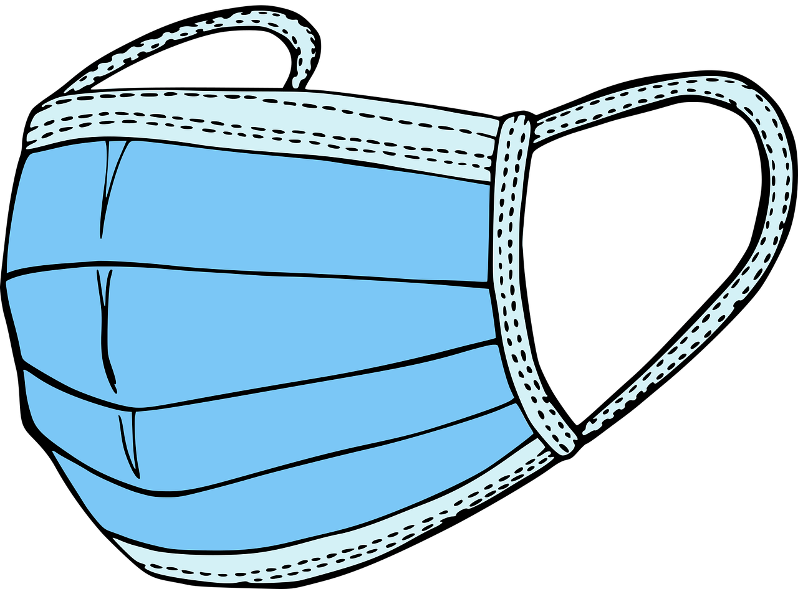

A educação durante a pandemia
Um nova maneira de aprendizado se difundiu durante esse período do COVID-19
Deste de o ínicio de 2020 o mundo inteiro vem passando por momentos conturbados. Graças a chegada do novo Corona Vírus, o COVID-19, todos os ambitos da sociedade foram prejudicados, fazendo com que a vida das pessoas fossem remodelas pra um novo sistema no qual evitasse a ploriferação do vírus.
Nesse momento pode-se observar uma grande mudança no cenario da educação, aonde por o Ministerio da Educação autorizou a substituição das aulas presenciais pelo modelo remoto, o chamado EAD, tanto para as instituições de ensino superior como para a educação básica. Dessa forma pode-se continuar a ministrar todo o ano letivo.

Tanto os professores quanto os alunos sofreram com essa mudança drástica. Por parte dos professores, eles tiveram que adaptar uma parte de sua residência à ambientes propícios ao ensino, além de aprender um pouco mais afundo sobre informática para poder ministrar as aulas. E por parte dos alunos, que agora precisavam se adaptar a uma nova rotina de aprendizado.
Por um lado é bom o ensino a distância, pois ele reduz os empecilhos indiretos que afetavam a vida de professores, alunos e funcionários das instituições, como trânsito, perigos do dia a dia, atrasos etc. Isso tudo, por já se encontrarem dentro de suas casas, aonde justamente seriam ministradas as aulas. Sem contar as reduções de contaminação pelo vírus que essa medida proporcionava.
Mas por outro lado, afastou-se muito das reais relações sociais que existiam dentro de um ambiente escolar, algo fundamental na vida da criança e do jovem. Essa mudança repentina fez com que muitas pessoas desenvolvessem quadros de ansiedade e depressão.
Atualmente com a grande parte da população vacinada, e os casos de contaminação decrescendo, muitas intituições de ensino voltaram com suas aulas presenciais, ou ainda, realizando o modelo flexivel, aonde algumas aulas são presenciais e outras remotas.